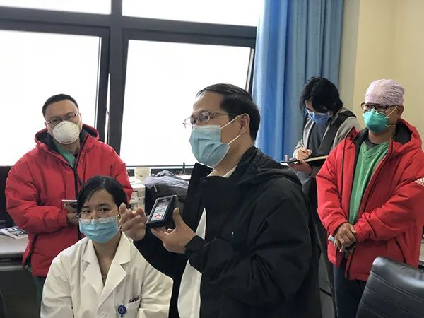

武汉一方舱医院发布紧急通知：拟出院病友需加做病毒抗体检查
原文链接 备份链接 澎湃新闻记者 汤琪 2020-03-04 21:46 来源：澎湃新闻 字号 3月4日晚，武汉市江岸方舱医院一名负责人向澎湃新闻（www.thepaper.cn）证实，江岸方舱医院发布了一份《紧急通知》：根据市防疫指挥部 …
澎湃新闻记者 汤琪

国家卫健委专家组成员、北京地坛医院感染科主任医师蒋荣猛。澎湃新闻记者 汤琪 图
3月5日下午，北京支援武汉医疗队在武汉协和医院西院区举行京汉两地远程重症病例讨论，交流重症患者救治和医院感染工作经验。
澎湃新闻（www.thepaper.cn）从会上了解到，目前，北京医疗队主要负责武汉协和医院西院区8楼、10楼和12楼病区。截止3月3日，累计收治患者突破300例，累计收治重症患者78例，累计出院68例。
作为国家卫健委专家组成员，北京地坛医院感染科主任医师蒋荣猛早在1月9日就来到武汉指导新冠肺炎疫情防控工作，坚守至今已超过50天，成为在武汉指导工作时间最长的专家之一。
蒋荣猛在会上表示，新冠肺炎是一个自限性疾病，没有有效的抗病毒药物，反而有很多抗病毒药物在临床上引起了很多副作用，因此，应以不损害病人为先，尽可能考虑病人的副作用、能不能耐受等问题。
针对激素使用，蒋荣猛说，他前段时间和卞修武院士在讨论病理的时候了解到，新冠病毒总的来讲损害两个方面——免疫系统和肺，其他器官基本是继发性的缺氧引起来的。从一些病案看出，病人的脾脏和淋巴结“一片荒凉、寸草不生”，在这种情况下还用激素的话，病人的免疫功能是没办法恢复，使用激素千万要小心。
此外，很多重症病人离世以后，肺泡里、巨噬细胞里仍然有大量的新冠病毒。“这也能解释很多病人在出院的时候病毒‘复阳’的情况，我们认为是病毒没有完全清除，咽拭子检测出现阴性只是假象，肺里仍然有病毒，这对于我们的防控工作会带来新的挑战。”他说。
蒋荣猛会后在接受澎湃新闻采访时，进一步解释了当前备受关注的出院患者“复阳”问题。
他表示，一些出现“复阳”的患者身体里的病毒并不是完全被清除了，核酸检测的敏感性是有限的。“我们现在看到有些病人病毒检测呈阳性的时间可以超过30天，甚至超过40天。如果病人在前三周治疗后符合出院标准，但实际上他还有十几天、二十天（可能携带病毒），所以国家在第六版、第七版诊疗方案中要求出院后再隔离两周，避免和其他人接触，就是要防止病毒没有被完全清除的情况出现。”
不过，蒋荣猛也坦言，目前“复阳”的传播力有多大尚不清楚，因为阳性不一定是真病毒，有可能是病毒尸体或碎片，所以还要继续研究，看到底有没有传染性。
此前的2月28日，国家卫健委医政医管局监察专员郭燕红在国务院联防联控机制新闻发布会上介绍，部分省报告治愈出院患者，在复诊过程中发现有核酸检测阳性的情况。通过监测发现，这部分患者没有再发生传染别人的现象，另外有一部分患者再检测新冠病毒核酸时又转为阴性。
对于是否可用病毒抗体IgM与IgG的检查作为判断出院的手段，蒋荣猛告诉澎湃新闻，抗体检查与能不能出院没有关系，抗体和传染性无关，抗体检查只是作为补充诊断，一个人产生了抗体说明他感染了病毒。在核酸检测不能百分之百检出来时，发现他有抗体了，就能做出诊断。
本期编辑 常琛
推荐阅读


原文链接 备份链接 澎湃新闻记者 汤琪 2020-03-04 21:46 来源：澎湃新闻 字号 3月4日晚，武汉市江岸方舱医院一名负责人向澎湃新闻（www.thepaper.cn）证实，江岸方舱医院发布了一份《紧急通知》：根据市防疫指挥部 …
原文链接 备份链接 3 月 4 日，武汉市多家方舱医院收到紧急通知，暂停办理病人出院，对于出院的新冠患者施行更加严格的检测标准和审核流程，第二天就要正式开始落实。此前，有的方舱医院每天有 30、40 名患者出院。 据澎湃、界面等多方报 …
原文链接 备份链接 武汉大学中南医院医学影像科副主任张笑春表示，要注意防控，但也不需要太恐慌，更不要歧视康复出院的病人，“我们有的是办法应对。” 全文4201字，阅读约需8分钟 新冠肺炎疫情暴发以来，一些出院患者复查时，病毒核酸检测结果 …
原文链接 备份链接 【财新网】（实习记者 张阳 记者 黄姝伦）多起复阳病例频现，为疫情防控带来新压力。武汉一线医生发文称，大量病愈患者出院，部分患者出院后出现再次发热、核酸检测阳性的现象，原因多种，既与患者基础带病相关，也有临床治疗、核酸 …
原文链接 备份链接 *************▲*************2020年2月13日，在湖北省新型冠状病毒核酸检测的服务机构，检测人员对采集来的样本进行标本信息核对。（新华社/图） 全文共4874字，阅读大约需要10分钟。 核 …